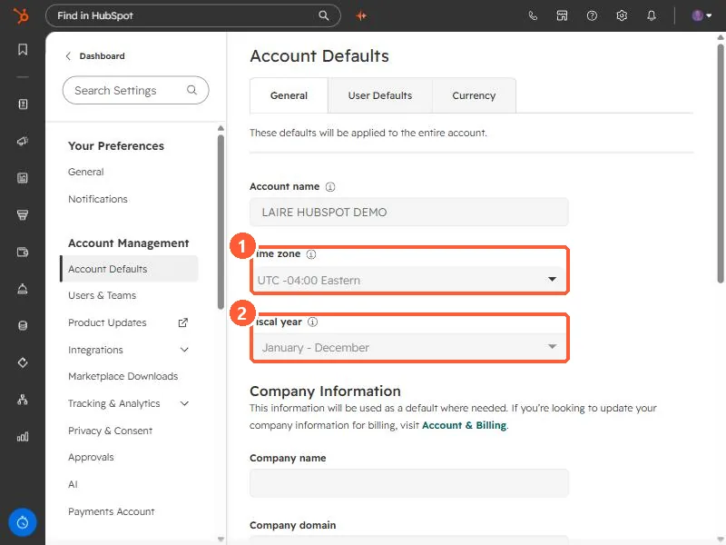

Short answer
In Settings, Account Defaults, the General tab holds the account name, Time zone, and Fiscal year. HubSpot says the account time zone localizes scheduled emails, scheduled social posts, and analytics dates, and workflows default to Eastern if no time zone is set. The fiscal year sets quarters for goals, forecasts, CRM filters, and reports. Changing either needs Account Access or Super Admin. Users also have their own time zone, which is separate.
1. The General tab
Open Account Defaults. The page says these defaults are applied to the entire account. My demo is set to UTC -04:00 Eastern and a January to December fiscal year.


2. What the time zone changes
- HubSpot says it localizes when scheduled emails send, when scheduled social posts publish, and the dates and times in analytics.
- Workflow timing settings use it. If none is set, they default to Eastern. See workflow settings explained.
- Some things use your computer's time zone instead, including timestamps for logged sales activities, record timelines, and property history.
- Each user also has a personal time zone, under Users & Teams, Preferences, Working hours. By default it follows the device.
3. What the fiscal year changes
HubSpot says the fiscal year makes fiscal quarters, goals, forecasts, CRM filters, and reports use your business's own periods. Changing it asks you to tick a confirmation box first. If your company's year starts in, say, July, set this before anyone builds quarterly reports.
The other tabs on this page are User Defaults and Currency. See multiple currencies.